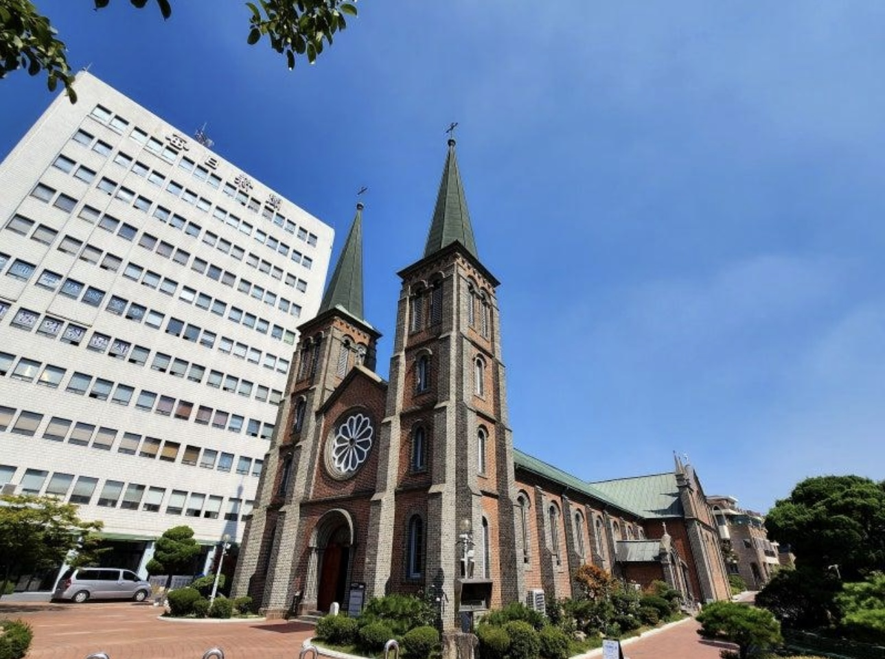

내가 이 장소들을 선택한 이유
학교에서 공부하고 휴식하면서 자주 이용하거나 인상 깊었던 장소들을 선정했습니다. 서로 다른 분위기를 가진 세 장소를 소개하고자 합니다.
추천하는 캠퍼스 핫스팟
-
베리타스관 (중앙도서관)

조용하게 공부하고 자료를 찾을 수 있는 캠퍼스의 대표적인 학습 공간입니다.
베리타스관 자세히 보기 -
하늘동산

공부하다가 잠시 쉬거나 산책하면서 캠퍼스의 분위기를 느낄 수 있는 공간입니다.
하늘동산 자세히 보기 -
예수성심성당

조용하고 차분한 분위기를 느낄 수 있는 가톨릭대학교의 특별한 공간입니다.
예수성심성당 자세히 보기
추천 방문 순서
베리타스관 → 하늘동산 → 예수성심성당
먼저 도서관에서 공부하고, 하늘동산에서 잠시 휴식한 뒤, 마지막으로 예수성심성당을 방문하는 순서를 추천합니다.
작성자
작성자: 안준원